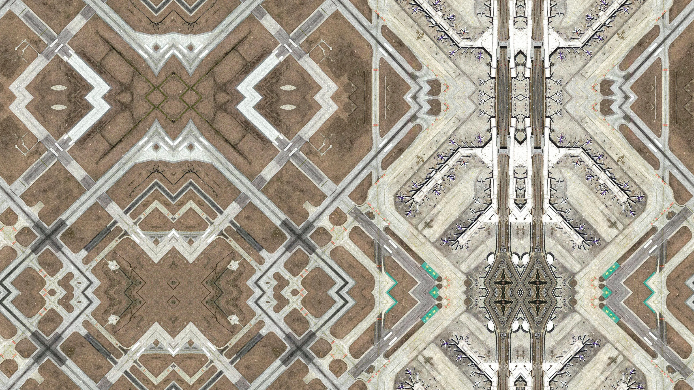
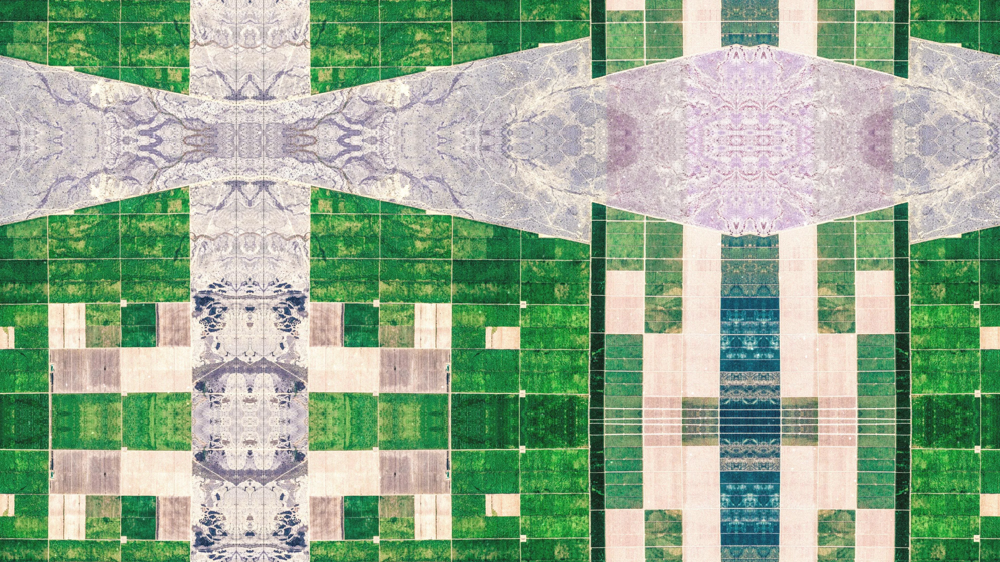
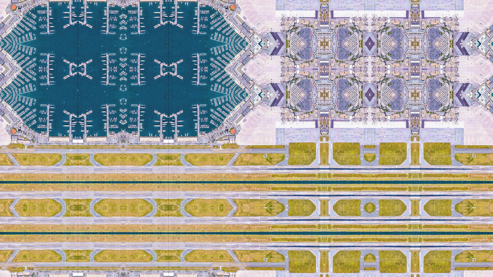
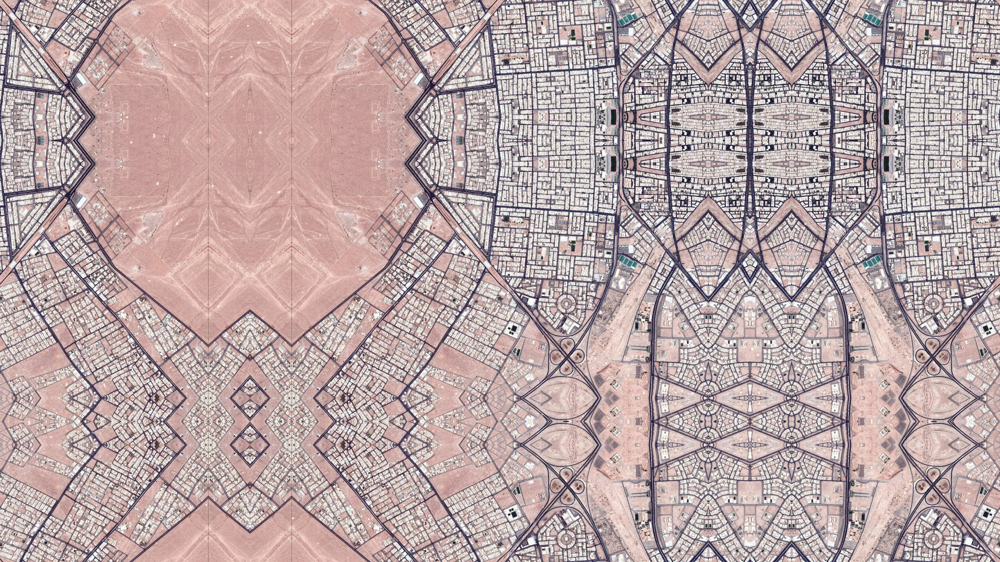

Symmetrical Fictions: On the Ir/Rationality of Symmetry, and the Aesthetics of Reclamation v1
Symmetrical Fictions is a video installation and research project that challenges the boundaries between rationality and fiction, technology and unconscious structure, by recomposing satellite imagery into speculative, symmetrical geographies. Drawing from satellite datasets (such as NASA's Earth Imagery), the installation mirrors and tiles planetary surfaces — including deserts, glaciers, post-industrial ruins, and human settlements — creating impossible yet eerily coherent landscapes. These "symmetrical fictions" form a visual language that gestures beyond the real, exploring an epistemology situated between perception, memory, and planetary imagination. Using this visual language, the installation invites viewers into a spatial-temporal collapse, exploring what it means to desire order in an entropic world, exploring how the unconscious mind transcends binary and linear reasoning, seeking instead a non-linear approach to understanding reality. This project does not seek control over matter, and instead, aims to transmute data into poetic experience. Rather than simply extracting or observing, the work repurposes technologies of surveillance and observation to propose new cartographies of planetary subjectivity. These are not maps for navigation, but spaces for dwelling — visualizations of symmetry not as perfection, but as excess and more-than-rational order. By blurring the lines between fiction and matter, narrative and geometry, image and epistemology, Symmetrical Fictions contributes to debates on interdisciplinary practices, epistemic diversity, and the limits of positivist knowledge systems. The project argues that all technologies — no matter how advanced — carry poetic residues and unconscious architectures. The symmetrical images created here are not merely aesthetic ends but tools for reflecting on and feeling through our planetary condition. They suggest that the visual, much like the unconscious, is not governed solely by reason but by associative intensities and formal impossibilities. This installation also reimagines the relationship between human structures and the natural world through the lens of the alchemist archetype. In a similar way that alchemy sought to transform base materials into something greater, the project repurposes planetary data, traditionally used for control or extraction, into speculative visual compositions. By reassembling the chaotic, fragmented textures of our planet into symmetrical, imagined landscapes, the installation challenges conventional understandings of space, order, and nature, proposing new ways of engaging with the planet. The project also addresses the mystification of digital systems by reclaiming visual data to present speculative environments that shift our understanding of "place." By using natural and human-made terrains, it reimagines landscapes as speculative environments, at once familiar and otherworldly. These landscapes emerge from the entropy of the Anthropocene — a geological epoch marked by human impact and ecological fragmentation. The installation points at the tension between nature and human infrastructure, using digital tools typically reserved for control and surveillance to explore new forms of visual expression and spatial organization. The symmetrical landscapes created through this process invite reflection on the human desire for coherence in a fragmented world. Ultimately, these images, and the installation as a whole, act as a form of aesthetic resistance to techno-positivist knowledge systems. It uses symmetric fiction as a methodology, merging unconscious structure, planetary data, and speculative art to encourage post-rational transmutation. The installation offers a speculative vision of balance and coherence in a world marked by instability and entropy, suggesting that, even in the face of overwhelming complexity, there may be a way to reclaim and reorganize our fragmented world.



